| 体の $y$ 軸まわりの回転 | 体の $z$ 軸まわりの回転 | 呼吸 |
新しいシステムを用いて、人間の動きをアニメキャラクターに反映させる既存のツールを更新しました。更新された機能は以下の動画で確認できます。
またシステムの高速化と軽量化の方法も実験しました。画質の劣化を抑えながら、必要なメモリーを大幅に減らすことができ（パラメータのデータ容量を18倍縮小、必要RAMは3倍縮小）、処理速度も少し上げることが出来ました。
バーチャルＹｏｕＴｕｂｅｒ（ＶＴｕｂｅｒ）になりやすくすることを目標に、私は２０１９年から自由研究をやり続けてきました。 具体的には、アニメキャラクターの顔イラストを一枚受け取り、そのイラストを動かせるニューラルネットワークのシステムを作りました。システムは顔を回転させることと表情を変更させることが出来ますが、様々な問題があります。それらを解決しなければ、システムは実践的なコンテンツ制作ツールになれません。今回の研究目的は以下の２つの問題を改善することです。
1番目の問題には、上半身が全部含まれるより大きい画像を扱えるようにシステムを改造しました。プロによるVTuberモデルのフィーチャに追いつくべく、先に述べた体の3種類の動きをシステムに追加しました。
2番目の問題には、以下のモデル縮小方法を試しました。
両方を同時に導入した結果、システムのパラメータのデータ容量を18倍縮小することが出来、必要RAMも3~4倍縮小することが出来ました。
この記事の試作は2021年に作られたシステムを基にして開発されました。既存のシステムは(1)キャラクターの正面画像と(2)キャラクターのポーズを指定するボーズベクトルを入力として受け取り、同じキャラクターが指定されたポーズを取った別の画像を出力します。構造は大まかに2つのニューラルネットワークに分解されます。顔モーファー(face morpher)というネットワークはキャラクターの表情を変更させ、顔ローテーターというネットワークは顔を回転させます。
| 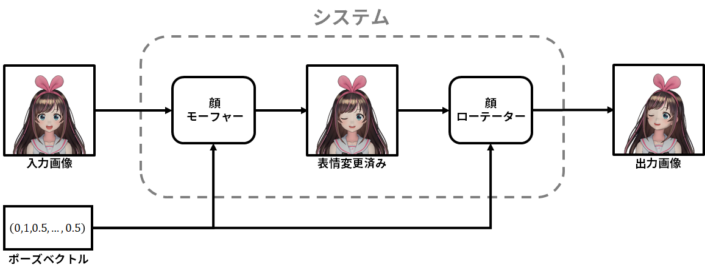 |
| 図2.1：2021年のシステム。 |
システムの教師データはMikuMikuDance(MMD)という3Dアニメーションソフトウェア用のキャラクターモデルをレンダーリングして作られました。データセットを作るために、私はMMDモデルを約8000個を集めて、アノテーションを付けました。その過程の詳細はこれらの記事(リンク、リンク)に書いてあります。
キャラクターの体を動かすためにシステムを改造しなければなりません。まず、入力画像はキャラクターの上半身を全部描写する必要があったので、画像の解像度を$256 \times 256$から$512 \times 512$に上げました。顔モーファーは2021年の仕様のままにしましたが、顔ローテーターは体ローテーターという新しいニューラルネットワークに置き換えました。このネットワークの役割は(1)顔と体を回転させることと(2)呼吸モーションを生成することです。
| 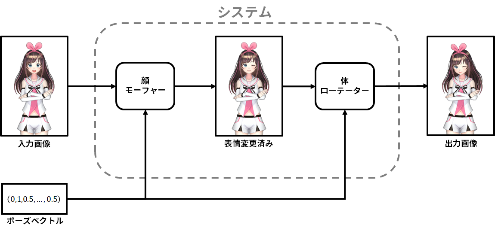 |
| 図3.1：新しいシステム |
体ローテーターは2つのサブネットワークで構成されています。半解像度ローテーターというネットワークは体ローテーターと同じ目的を果たしますが、入力画像は$256 \times 256$に縮小された体ローテーターの入力であり、出力画像も同じ解像度です。それは$512 \times 512$に拡大され、エディターというネットワークに渡します。エディターは画像に編集と合成を施し、最後に画像を一枚出力します。
| 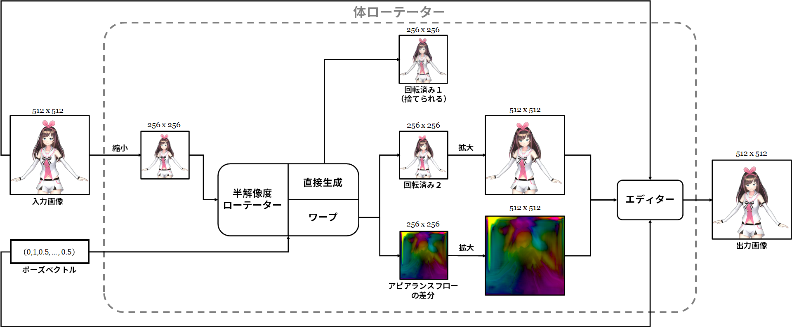 |
| 図3.1.1：体ローテーターの大まかな構造。 |
先に述べた「解像度を半分にして回転させ、それから拡大して編集する」というやや煩わしいやり方を選択した理由は、既存の顔ローテーターの処理速度に劣らないように体ローテーターを高速化するためです。体ローテーターの入力画像は$512 \times 512$であり、顔ローテーターの入力画像より画素が4倍あります。なので、顔ローテーターと同じようなネットワーク構造を用いたら、体ローテーターは顔ローテーターより4倍遅くなり、リアルタイムのアプリケーションで使えなくなります。しかし、入力画像を$256 \times 256$に縮小することで、既存のネットワーク構造を用いても処理速度は変わりません。半解像度ローテーターを走らせた後、最後の出力を生成するために必要な処理は出力した画像を$512 \times 512$に拡大してディテールを追加することだけなので、「体の回転させる」タスクに比べると大幅に易しくなります。つまり、エディターはパラメータ数が他のネットワークより少なくても大丈夫なので、入力画像は画素が4倍増えても半解像度ローテーターと同じ処理速度を出せるように調整できます。具体的に、半解像度ローテーターのデータ容量は130MBですが、エディターのデータ容量は30MBだけです。
半解像度ローテーターの本体はエンコーダー・デコーダネットワークで、キャラクターの上半身画像とポーズベクトルを受け取り、特徴量のテンソルを出力します。そのテンソルに以下の2つの画像処理手法を施し、出力画像を1枚ずつ生成します。
| 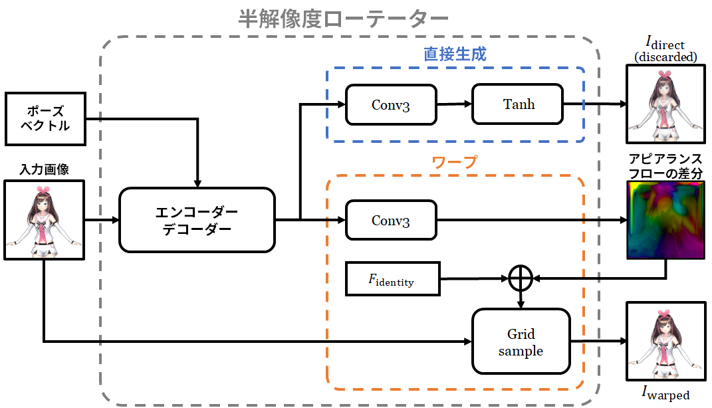 |
| 図3.1.2：半解像度ローテーター。 |
半解像度ローテーターは画像を2枚出力しますが、アピアランスフローのオフセット[footnote]も出力しますので、実際に出力されるものは3つあります。直接生成された画像はシステムを学習させる時にしか使わないので、推論時には捨てられます。ワープで生成された画像とアピアランスフローのオフセットは$512 \times 512$に拡大され、エディターに渡されます。
ニューラルネットワークには大体アピアランスフローを作るよりオフセットの方を作るのが簡単です。例えば、キャラクターの体を小さい角度で回転させるアピアランスフローを考察してみましょう。オフセットの値はどこでもゼロに近いと考えられます。しかし、フローの方は$F_\mrm{identity}$とほぼ同じです。$F_\mrm{identity}$の値はグリッドパターンに従って配置された画素の座標なので、ゼロテンソルより何倍も複雑です。
なので、私のワープの実装はまずアピアランスフローのオフセットを生成し、それに$F_\mrm{identity}$を足してアピアランスフローを作ります。
エディターの構造は半解像度ローテーターのと似ていますが、本体はエンコーダー・デコーダではなくてU-Netです[Ronneberger et al. 2015]。本体が出力する特徴量テンソルは以下の画像処理手法に使われています。
| 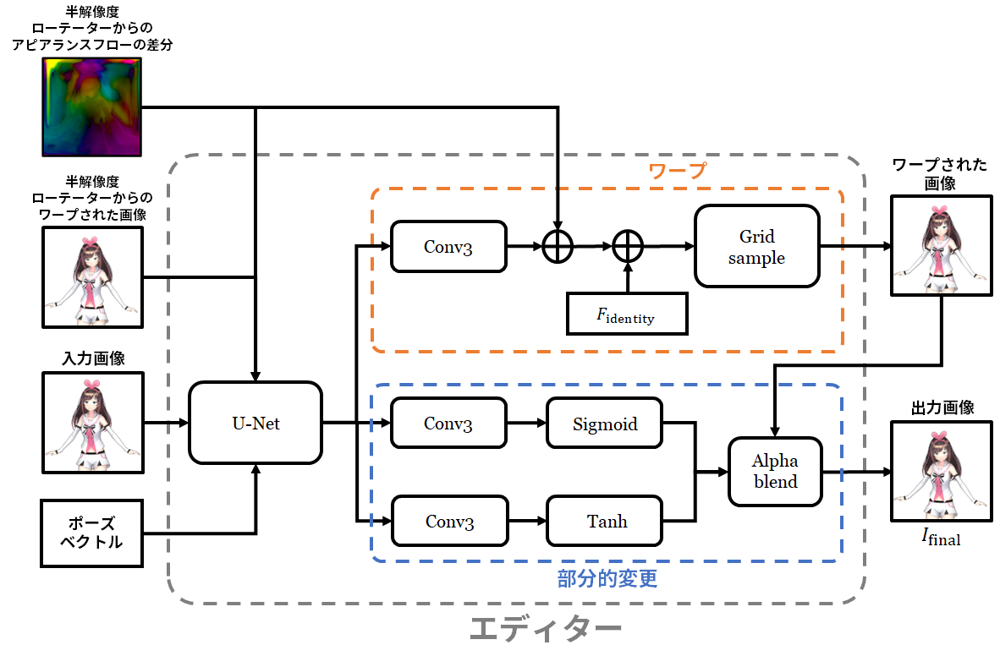 |
| 図3.1.3：エディター。 |
上述の構造には複数の変わったデザインが含まれます。一つは、半解像度ローテーターは直接生成で画像を1枚作りますが、その画像は推論時に何にも使われずすぐに捨てられます。もう一つは、エディターの複雑な構造です。例えば、最後の出力画像は、以上の2つの画像処理手法を用いて生成する代わりに、特徴量テンソルから直接生成できるはずです。これらの変わったデザインは複数のデザインの効果測定を行い、一番いいデザインを選んだ結果です。選別の過程はこの記事の完全版に書いてあります。
2021年に作ったデータセットは上半身全体を映していないため、体ローテーターを学習させるには新しいデータセットを作らなければなりません。学習データは前のデータセットと同じく集めた8000体のMMDモデルをレンダーリングすることで作られましたが、MMDモデルの扱い方が変わりました。
入力画像のポーズ。前のデータセットは、入力画像の中のキャラクターがいわゆる「Aポーズ」を取る仕様になっています。
| 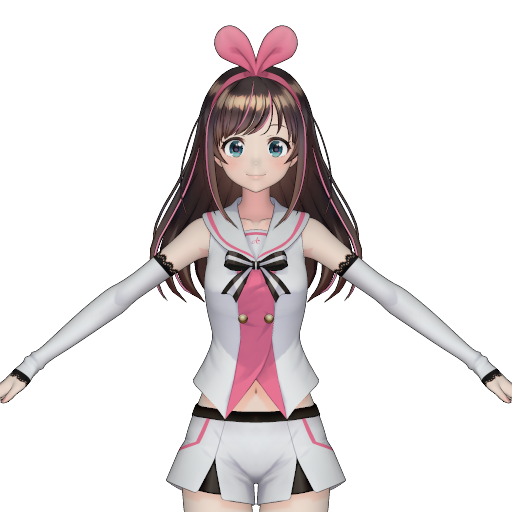 |
| 図3.2.1：Aポーズ。キャラクターはキズナアイ(© Kizuna AI)。 |
しかし、推論時にはシステムの入力データは人が描いたイラストレーションです。Aポーズを取ったキャラクターのイラストレーションは多くないため、そのポーズが仕様のデータセットで学習させられたシステムは汎用性が低すぎます。システムをより役に立つようにするには入力画像のポーズの多様性を増やす必要があります。新しいデータセットの中のキャラクターは基本的に立ちポーズを取りますが、その多くはAポーズのように棒立ちではなく、体を少し左右に向けたり、腰を小さい角度で回転させたりします。腕はかなり自由に配置されますが、(1)手は顔より下に配置されることと(2)腕と手が顔に近すぎないことが望ましいです。
| 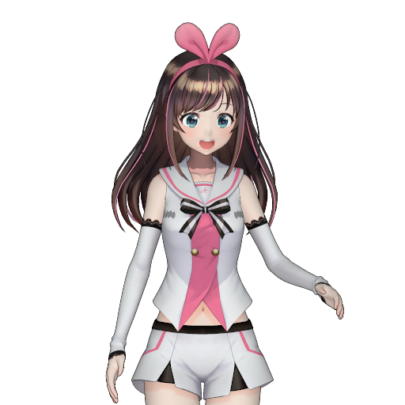 | 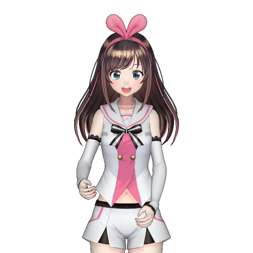 | 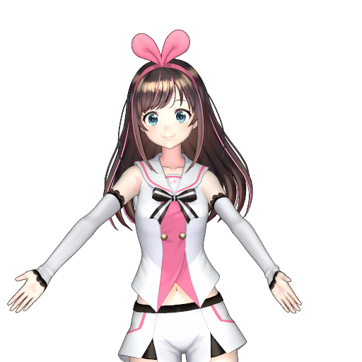 | 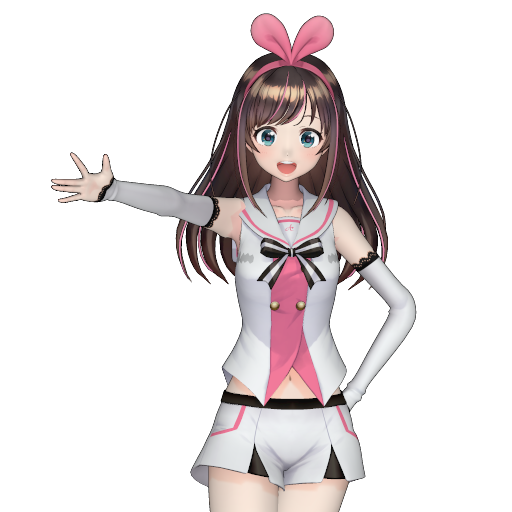 |
| 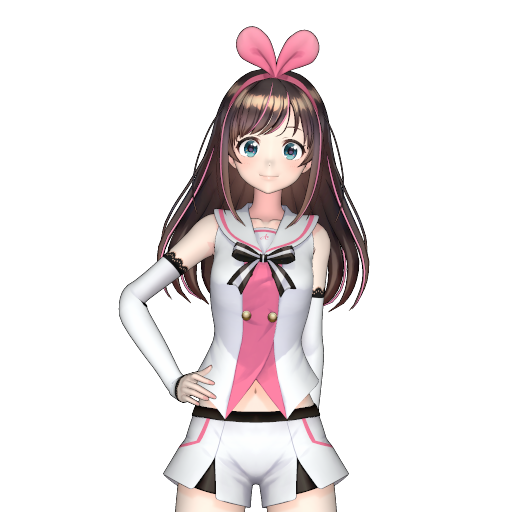 | 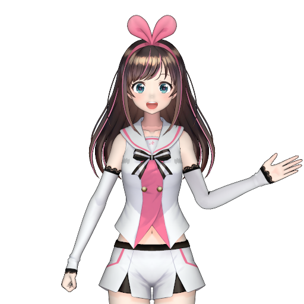 | 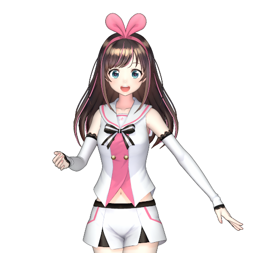 | 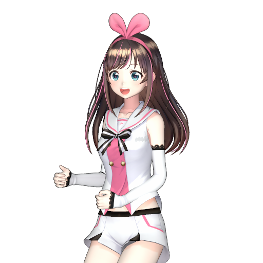 |
| 図3.2.2：新しいデータセットの入力画像のポーズ例。 | |||
上述のポーズを生成するために、私はニコニコ動画やBowlRollからMMDモデル用のポーズをダウンロードしました。4731個集めましたが、使えるのは832個だけでした。入力画像のポーズを作るには、まず842個のポーズの中から1個をランダムに選んで、そのポーズとランダムに腕の角度を変更されたAポーズを合成します。手法の詳細は記事の完全版に書いてあります。
髪の長いキャラクターの扱い。MMDモデルでは、頭を回転させると、髪の毛全体も一つの剛体のように一緒に回転します。
| 図3.2.3：MMDモデルの首ボーンを$z$軸まわりに回転させると髪の毛全体が首と一緒に回転します。キャラクターは周防パトラ(© HoneyStrap)で、MMDモデルはOTUKIさんの作品です。 |
しかし、ニューラスニットワークシステムにとってこの動作を真似することは非常に難しいです。まず、システムは髪の毛と髪の毛ではない部分を正しく区別しなければなりせん。正しく区別できない場合、体または服装が切断される不快な間違いが生じます。その他に、入力画像では隠れているが、回転して見えてくる髪の毛の部分も正しく生成する必要があります。
| 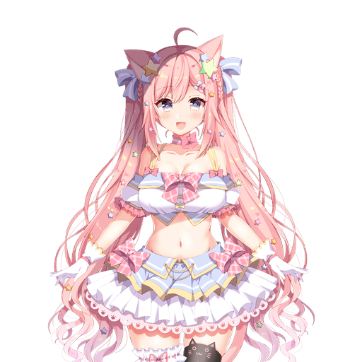 | |
| 図3.2.4：右の動画は本記事のシステムを使って左の画像から生成されました。しかし、システムの教師データには図3.2.3のような髪の毛の動きが入ります。動画の下の部分を見てみると、髪の毛のディテールが失われることは明らかです。他に、システムは手が髪の毛の一部だと思い込んだらしく、髪の毛を動かした時に指を切ったり伸ばしたりしていました。キャラクターは愛宮みるく(© Noripro)です。 | |
最新の機械学習技術を用いて髪の毛の区別と生成を正しくできるかもしれませんが、この2つのタスクを避けることが出来たら、問題は大幅に易しくなります。そのために、MMDモデルのスキニングのアルゴリズムを改造して、首と頭の影響を頭からあまり離れていない髪の毛の部分に制限しました。その結果は以下の動画で確認できます。
| 図3.2.5：首と頭の影響が制限された後の髪の毛の動き。首が回転しても、頭から離れている髪の毛は動かないため、アニメーション生成のタスクがより簡単になります。 |
まとめると、システムが体の動きを生成できるように改造するには、体ローテーターという新しいサブネットワークを実装する必要があり、それを学習させるデータセットも新しく作らなければなりません。体ローテーターは、まず入力画像を縮小し、その中のキャラクターの体を動かし、そして画像を拡大し調整します。前のプロジェクトの時より4倍大きくなった入力画像を素早く処理できるようにこの変わったデザインを選びました。新しいデータセットはキャラクターが様々なポーズを取るように生成されました。他に、髪が長いキャラクターの扱いを簡単化するべく、MMDモデルの髪の毛に首と頭ボーンの影響を制限しました。
私のシステムの短所のーつはリソースが沢山かかることです。パラメータのデータ容量は517MBですし、一枚の画像を処理する時間は、Titan RTXといった強力なGPUを使っても、35msぐらいです。データ容量が大きければ大きいほどモバイルデバイスで使いにくくなり、GPUの処理能力が低ければ低いほど処理時間が長くなります。システムの汎用性を向上するには、必要なメモリー量と処理速度の改善が重要です。私は以下の効率化手法を試しました。
深さ単位分離可能畳み込み層を用いるかどうかとhalfを用いるかどうかによって4つのシステムのバリエーションを作りました。深さ単位分離可能畳み込み層を用いる場合、バリエーションの名前に「separable」という言葉を入れて、そうではない場合は「standard」を入れます。使っている浮動小数点数型の名前もバリエーションの名前に入れます。故に、4つのバリエーションの名前は「standard-float」と「separable-float」と「standard-half」と「separable-half」です。
上述した効率化手法の最大の利点はデータ容量の縮小です。予測通り、深さ単位分離可能畳み込み層はデータ容量を約9倍縮小し、halfはさらにそれを半分にしました。
| データ容量(MB)とstandard-floatに対する縮小率 | |||
| standard-float | separable-float | standard-half | separable-half |
|
517.56
(1.00x) |
55.48
(9.33x) |
258.84
(2.00x) |
27.82
(18.60x) |
システムのバリエーションが入力画像を1枚処理するために使ったGPUのRAMを測定しました。以下の3台のコンピュータで実験を行いました。
実験結果を以下の表に示します。
| 使ったRAMの量(MB)とstandard-floatに対する縮小率 | ||||
| コンピュータ | standard-float | separable-float | standard-half | separable-half |
| コンピュータA |
816.91
(1.00x) |
417.49
(1.96x) |
467.39
(1.75x) |
274.80
(2.97x) |
| コンピュータB |
816.91
(1.00x) |
417.49
(1.96x) |
417.39
(1.96x) |
210.80
(3.88x) |
| コンピュータC |
813.91
(1.00x) |
414.08
(1.97x) |
415.89
(1.96x) |
209.30
(3.89x) |
各効率化手法を別々に導入すると必要RAM量が約2倍低下しました。両方導入すると縮小率が約3～4倍になりました。
システムが一枚の画像を処理するのに必要な時間も計測しました。
| 平均処理時間(ms)とstandard-floatの平均処理時間の縮小率 | ||||
| コンピュータ | standard-float | separable-float | standard-half | separable-half |
| コンピュータA |
34.105
(1.00x) |
26.777
(1.27x) |
23.803
(1.43x) |
24.540
(1.39x) |
| コンピュータB |
43.841
(1.00x) |
46.959
(0.93x) |
38.019
(1.15x) |
38.848
(1.13x) |
| コンピュータC |
690.751
(1.00x) |
335.364
(2.06x) |
1125.345
(0.61x) |
385.041
(1.79x)g |
各効率化手法は処理スピードを上げたとは言えますが、最良の場合は2倍しか上げられなかったので、結果はあまり大きくなかったです。後から考えれば、これは驚くほどのことではありません。何故かと言いますと、システムの中のニューラルネットワークは様々な種類の層で作られるのに、深さ単位分離可能畳み込み層の使用は畳み込み層にしかできません。その結果、他の種類の層は全く効率化されませんでした。
結論として効率化手法を両方導入することで、システムのデータ容量を18倍縮小し、必要なGPUのRAM量を3倍低下し、そして少し処理スピードを上げることが出来ます。なので、両方とも用いるのがお勧めです。
システムを使って、72人のVTuberと関連のキャラクターの画像からアニメーションを作りました。その中の16人のアニメーションは以下の図で確認出来ますが、他のキャラクターのアニメーションはアイキャッチャーにあります。
| 図5.1：「standard-float」のシステムのバリエーションで作られた16人のVTuberのアニメーション。 | |||
去年作ったシステムと同様、 GUI操作で画像をコントロールできるツールを作成しました。
また、iFacialMocapというiOSアプリケーションで取り込んだ人間の動きを、アニメのキャラクターに反映するツールも作りました。
私のシステムはある程度綺麗なアニメーションを生成することが出来ますが、入力画像が学習データに似てないと、変な動きや歪みが生成される可能性があります。具体的に言いますと、大きい帽子の扱いが苦手のようです。
頭の近くにある細いものを削除する傾向もあります。細い髪の毛は消されても大きな問題はありませんが、天使の輪など常に見える装飾物の場合は間違いが目立ちます。
| 一伊那尓栖 (© Cover corp.) | オーロ・クロニー (© Cover corp.) |
他に、学習データには武器や楽器等の道具が少ないため、それらを正しく変形することが出来ません。
| がうる・ぐら(© Cover corp.) | 森カリオペ (© Cover corp.) |
| 風真いろは (© Cover corp.) | 律可 (© Cover corp.) |
一枚のキャラクター画像からアニメーションを生成するシステムを改善する試みについて述べました。一つのサブネットワークを作り直すことで、システムは体の動きを生成できるようになり、プロLive2Dモデラーによるモデルの機能に一歩近づきました。デザインが簡単なキャラクターは綺麗に動かせますが、大きい帽子、武器、楽器、頭の周りの細い装飾物等の学習データにあまり存在しない要素があったら、目立つ間違いを出力してしまう傾向があります。
新しい機能を追加する他に、システムの効率化手法(深さ単位分離可能畳み込み層と「half」)を2つ試しました。両方導入することで、システムのデータ容量を18倍縮小し、必要RAM量を3～4倍低下させ、そして少し処理スピードを上げることが出来ました。必要メモリが少なくなったシステムは処理能力の低いコンピュータで実行しやすくなりましたが、処理スピードをさらに向上しなければなりません。
最後に、この記事は研究レポートの簡略版で、完全版(英語)はこのリンクでご覧できます。完全版には問題の仕様、ネットワークの学習過程、既存研究との比較、ネットワーク構造の評価等の内容が書いてあります。気になる点がありましたら読んでみてください。
私自身はグーグル合同会社でソフトウェアエンジニアをやらせていただいてますが、このプロジェクトは仕事と全く関係ありません。会社のリソースを使わずに自由時間でやった趣味に過ぎません。グーグルに就職する前は大学院でコンピュータグラフィックスを研究したことはありますが、今は普通のソフトウェアエンジニアとしてグーグルマップのバックエンドを開発して生計を立てています。この記事に書いてある見解は私個人のものであり、会社の見解ではありません。
Andrew Chen様、Ekapol Chuangsuwanich様、Yanghua Jin様、Minjun Li様、Uehara Mamoru様、Alice Maruyama様、Panupong Pasupat様、Yingtao Tian様、Pongsakorn U-chupala様に感謝申し上げます。
Project Marigold
{kind=link}
{kind=link}
{kind=link}
{kind=link}
{kind=link}
{kind=link}
{kind=link}
{kind=link}
{kind=link}
{kind=link}
{kind=link}
{kind=link}
{kind=link}
{kind=link}